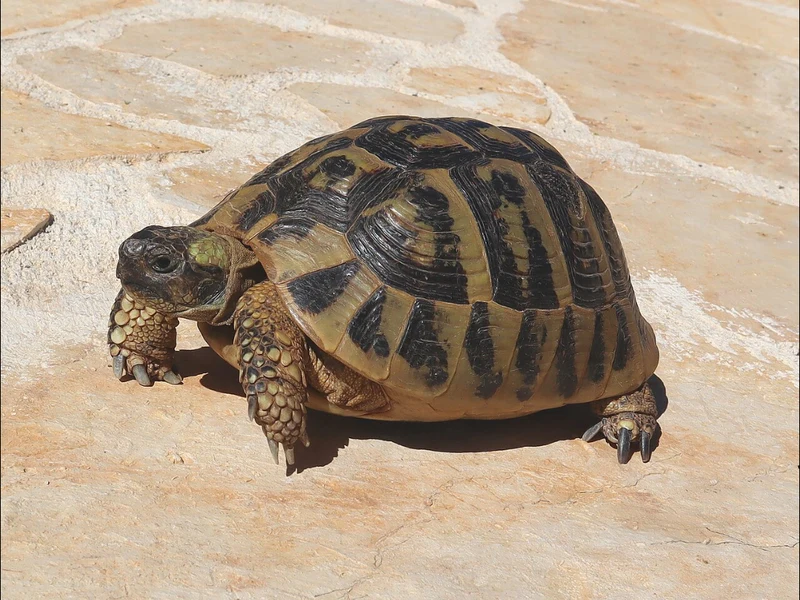

ヘルマンリクガメ2亜種の東側・大型側。バルカン半島に分布し、日本のヘルマンCB流通の主流を占める。丈夫でよく食べ、リクガメ入門の定番。冬眠できる亜種だが、飼育下では通年加温も選べる。CITES II。

幼体は数cmから育ち、環境が合えば食欲は安定しやすい。朝ランプが点くとバスキングスポットへ歩き、体温が上がると餌を探して歩き回る——この繰り返しが日課になる。急がせず、ゆっくり育てるほど甲羅はきれいに仕上がりやすい。
ヒガシ亜種はヘルマン2亜種の大型側で、メスは甲長19〜23cm、最大28cm級の記録がある。「ヘルマン＝小型」のイメージだけで迎えると、成体の設備が足りなくなりやすい。120cm級の床面積を最初から視野に入れておくと後悔しない。
日本で「ヘルマンリクガメ」として売られる個体の多くはこのヒガシ亜種ですが、店頭で亜種名まで明記されないことがあります。ヒガシはニシ亜種より明確に大型化するため、成体サイズの想定を間違えると設備計画が崩れます。購入時に亜種名（boettgeri）と由来（CB）を確認しましょう。
ヒガシヘルマンリクガメは、ヘルマンリクガメ（Testudo hermanni）の東側亜種 Testudo hermanni boettgeri（Mojsisovits, 1889）です。TTWGチェックリスト（2021・2025）とReptile Databaseの双方が有効な亜種として扱っています。
バルカン半島を中心に、セルビア・北マケドニア・アルバニア・ギリシャ・ブルガリア・ルーマニア南部からトルコのヨーロッパ部まで広く分布します。ニシ亜種との分布境界はイタリア北東部のポー平原付近とされます。生息地は乾いた草地・石灰岩の丘・地中海低木林（マキア）で、夏は高温乾燥、冬は冷涼——この季節差が「バスキング＋温度勾配＋冬の休眠」という飼い方の根拠になっています。
ヘルマン2亜種の識別は、色より「腹甲の黒帯」と「目の下の黄色斑」を見るのが確実です。
| 識別点 | ヒガシ（boettgeri） | ニシ（hermanni） |
|---|---|---|
| 腹甲の黒帯 | 途切れて不連続・薄い個体も多い | 2本のつながった黒帯が明瞭 |
| 目の下の黄色斑 | 通常なし | あることが多い（サブオキュラースポット） |
| 地色 | オリーブ〜くすんだ黄色 | 鮮やかな黄金色に濃い黒斑 |
| 成体サイズ | 大型（メス19〜23cm・最大28cm級） | 小型（おおむね18cm以下） |
← 横にスクロールできます
雌雄差：メスはオスより明らかに大きく育ちます。オスは尾が長く太く、総排泄孔が甲羅の縁より外側に位置し、腹甲がわずかに凹みます。幼体での雌雄判別は困難です。
活発で食欲が安定しやすく、環境に慣れると飼い主の姿や給餌の気配に反応するようになります。歩行量が多い亜種なので、高さより床面積を優先し、障害物や緩い起伏のあるレイアウトにすると行動が豊かになります。丈夫さとCB流通の安定は、ヘルマンが「リクガメ入門の定番」と呼ばれる理由そのものです。
UVBはFerguson Zone 3（日光浴の多い種）の帯域で、T5 HO直管10〜12%クラスが基本です（照射距離で実効値が変わるため、特定製品の断定はしません）。温度は「熱い場所と涼しい場所を自分で行き来できる」勾配を最優先してください。日本での最大リスクは梅雨〜夏の蒸れで、通気の確保が第一です。
野草と葉物野菜を中心にした高繊維・低タンパクの草食が基本です。タンポポ・オオバコ・シロツメクサなどの野草、チンゲンサイ・エンダイブなどの葉物を組み合わせ、市販のリクガメフードは補助にとどめます。果物は糖分が多く常用に向きません。カルシウム剤の添加とUVBの併用が甲羅と骨の形成を支えます。急速な成長は甲羅のボコつき（ピラミッディング）につながるため、量より質と継続を優先してください。
原産地では冬に数ヶ月の休眠をとる亜種で、飼育下でも健康な成体なら冬眠させる選択肢があります。ただし必須ではありません。
ヒガシ亜種はニシ亜種より1回の産卵数が多い傾向が報告されており、EUを中心にCB繁殖が最も確立したリクガメの一つです（TFTSG種アカウント）。飼育下繁殖では、冬眠明けの交尾、日当たりの良い産卵場所（掘れる土壌）、人工孵卵が基本の流れです。孵卵温度によって性が決まる（温度依存性決定）ことが知られています。詳細な繁殖管理は専門資料の参照をおすすめします。
日本で「ヘルマンリクガメ」として流通する個体の主流がこのヒガシ亜種で、EU産CBを中心に流通が安定しています。国内CBも見られます。価格はリクガメの中では手頃な部類ですが、店頭で亜種名が明記されないことがあるため、購入時は「boettgeri（ヒガシ）かどうか」「CBかどうか」を確認してください。
向きます（リクガメ入門の最有力候補の一つ）。丈夫でCB流通が安定し、飼育情報も豊富です。ただし「小さいままではない」「50年を超えて生きる」という2点は入門種であっても軽くありません。成体サイズの設備と長期の計画を先に確認してから迎えてください。迷ったら飼う前に考えてほしいことと亀診断をどうぞ。
← 横にスクロールできます
| 名前 | 甲長 | 難易度 | 冬眠 | 特徴 |
|---|---|---|---|---|
| ヒガシヘルマン このページ | 15〜23cm（最大28cm級） | 中級 | 可（通年加温も可） | 大型側・CB流通の主流 |
| ニシヘルマン | おおむね18cm以下 | 中級 | 可（短め） | 小型・鮮色・流通少なく高価 |
| ヘルマンリクガメ（親種ページ） | 15〜23cm | 中級 | 可 | 種全体の解説 |
| ロシアリクガメ | 15〜20cm | 入門〜中級 | 可 | 入門定番・穴掘り名人 |
飼育温度・湿度などの数値は、亜種単位の一次資料が乏しい項目について地中海系リクガメの一般的な目安を含みます。その場合は断定を避けています。